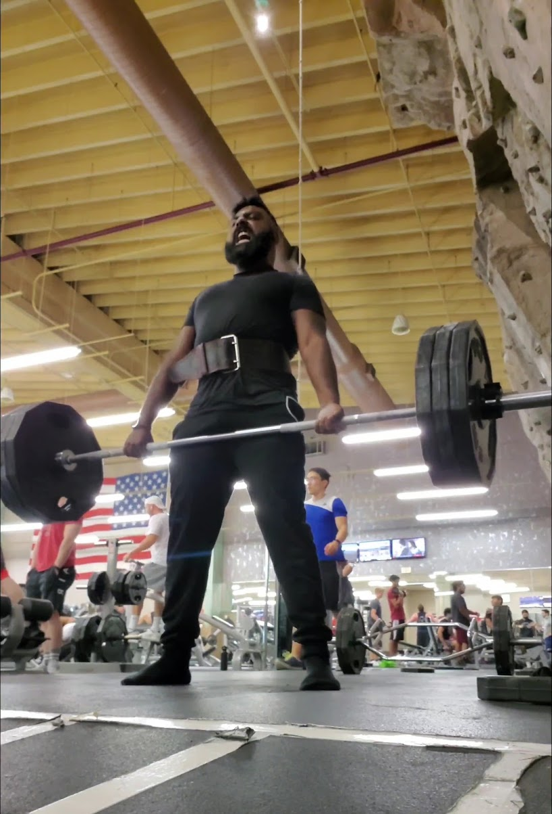
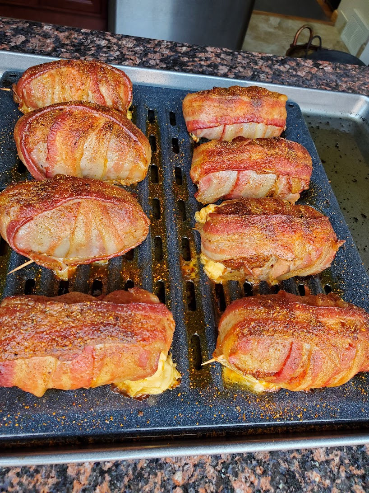
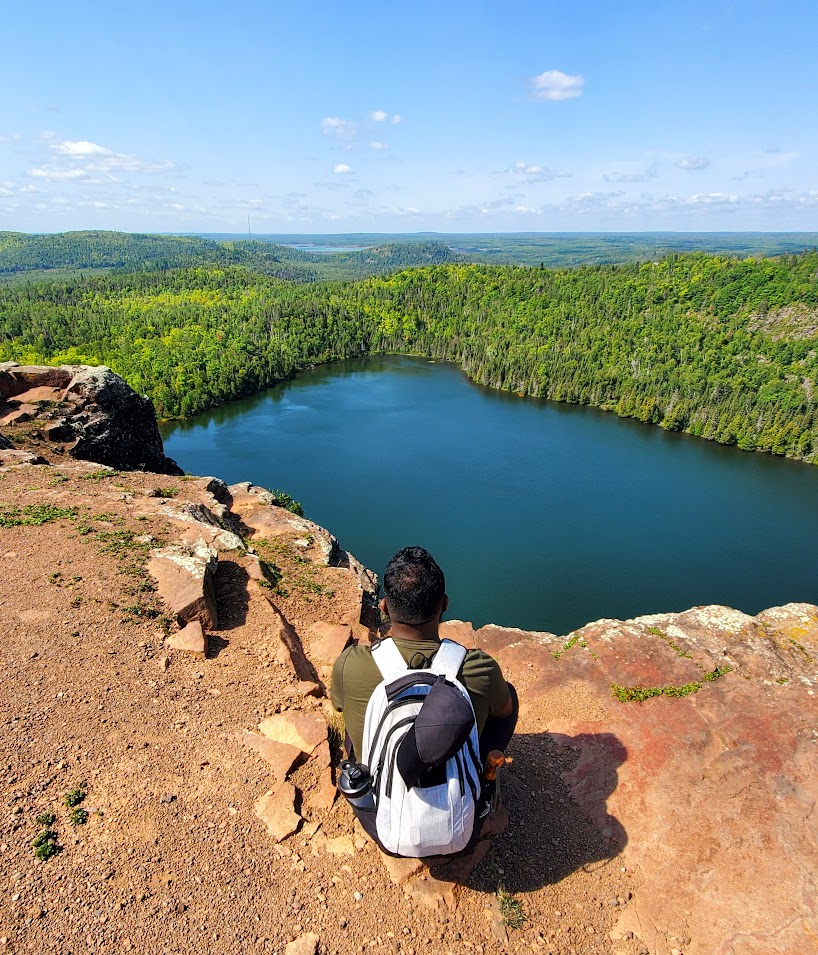
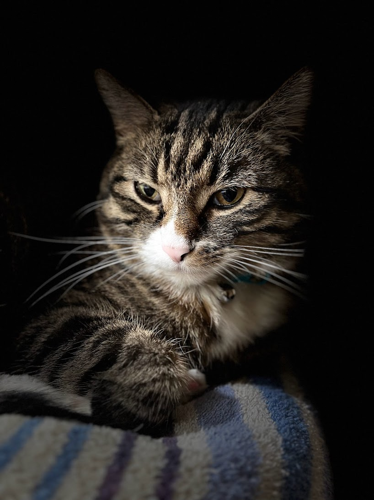

Weight Training
I work in Phyical Therapy and I have fallen in love with how the human body works and operates. So much so that I also fell in love with weight lifting. Nothing like lifting a heavy weight and feeling like a greek god to boost your confidence! Since I work in PT, I focused alot of my training around functional mobility and training. Keeping yourself mobile and functional is a great way to make sure you stay safe and avoid injuries. Which, I have had my fair share of hahaha. But I was really proud to hit this milestone, a 315lb deadlift. It's definitely not the heaviest weight ever lifted, but being able to perform this safely after an injury really makes me feel proud of what I was able to accomplish!
Cooking/baking
Ever since I was a kid I LOVED to cook. I used to watch the food network channel all the time and my all time favorite show was called Good Eats hosted by Alton Brown. I would be obsessed with the science behind how food was made and would experiment in my kitchen any chance I got. I later took a cooking class in high school for 2 years and then ended about helping teach the class for my last 2 years of high school. Plus I got free food!
I kept honing my skills in the kitchen and I feel VERY confident in my skills that I feel like I can recreate most advanced recipes! Pictured above is one of those recreations called Armadillo Eggs. No, they don't actually have armadillo eggs in them, but they are also called Texas Twinkies for some reason? Anyway, it is a jalapeno pepper stuffed with pepperjack cream cheese, then it's wrapped in italian sausage, AND THEN wrapped in bacon! The italian sausage is seasoned with my homemade BBQ seasoning and I dusted a little bit of that on top of the back as well. Let me tell you, this is practically a heart attack waiting to happen. It's a good thing I know CPR!!
Traveling
I've been trying to travel more as I get older. The one thing my elderly patients tell me is that I shouldn't wait to travel and to do it while I am young. Well, I guess I've been taking that advice to heart since I have been traveling a lot more. There is so much to see in this world and I want to experience as much as I can before I am unable too. This photo was taken on my most recent trip to Minnesota. There is a hiking trail called Superior Lake Hiking and on that route there are two beautiful lakes called Bean and Bear Lake. This is Bean lake and it was absolutely breath-taking to see. Don't get me wrong, it was one heck of hike to get to the spot, but man was it work the trek.
Cats
Look at this distinguished gentleman! This is Ace, named after the famous pet detective. He's a 9 y/o slim boy who somehow manages to be be chonky at the same time. I wasn't always a fan of cats growing up and I was definetly more of a dog person. But since I wasn't allowed to get a dog as a pet when I was kid, I decided to settle for a cat. Next best thing right? Well, it turned out to be a great decision since he's basically a dog in cat's clothing hahaha. Seriously, he loves to play fetch and he does love to get belly scratches too! 10/10, would pet again!